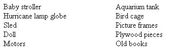

Foraging in the wild for fruits, nuts and greens is a great way to keep plenty of the real stuff in your menus. But there are many earth things to be found in tame places, too. Here, for starters, are some of our lucky finds. Not that your discoveries will duplicate ours . . . but isn't that the fun of it . . . you never know what you might find. Be open and ready for whatever -something good is sure to turn up!
I. THE ARBORETUM
Usually found only in cities, arboretums have varied and exotic plantings of trees and shrubs. Often there are fruit trees with their fruit rotting on the ground, eaten only by wasps. We've picked up bags full of delicious apples and pears from the ground under old fruit trees in a ,Philadelphia arboretum. Nuts can be gathered here too . . . black walnuts, hickory nuts, beech nuts, butternuts, Chinese chestnuts.
And, for your craft work, there are often unusual cones and pods for use in making dried arrangements, earth wreaths and such. You wouldn't wrench these from the live tree, of course, but they can be found on the ground when dried and loosened by frost.
II. CITY AND TOWN PARKS AND STREETS
Next time you cruise around town, LOOK at the trees. Chances are you'll find black walnut, hickory, maybe Chinese chestnut trees as curbside plantings. The true forager learns to spot these trees out of season and returns with containers when the time and the nuts are ripe. And there are usually wild cherries, blackberries and many edible greens in the parks. Euell Gibbons once made a full meal of food foraged in New York's Central Park.
Much city-tamed wild food goes begging because the average city resident doesn't realize it's edible. We've found fine clumps of purslane (eaten in India for thousands of years) in patches of curbside weeds. Burdock, lamb's quarter, dandelion, sorrel, chickweed and chicory are other examples of wild fare that can almost always be found within city limits.
III. SMALL TOWNS
Small towns are gold mines for the tame forager, too. Elderberries and blackberries grow by the railroad tracks, cattails in the swampy "waste places", milkweed in vacant lots. Since seeds often hitch rides on trains, the right-of-way along a railroad track is an excellent foraging ground and offers a wide variety of plant life.
Small town weekly papers have the most human want ads. You can get lots of clues here. Last fall we were able to pick bushels of marvelous winesap apples and seckel pears FREE! Two homeowners had put ads in the local paper offering the fruit free to whoever would pick it. This saved them the trouble of raking spoiled fruit and dealing with wasps. We didn't ask why they didn't want the fruit, we just picked it gratefully and cleaned up the soft dropped fruit under the tree for our goats. The trees had not been sprayed, either. What luck! Apples sure taste real when you can safely eat them skin and all . . . an almost forgotten pleasure!
Who knows how many other homeowners have old, uncared-for (unsprayed!) trees dropping unwanted and unused fruit. Try putting your own ad in the paper, offering to clean up under a tree for the privilege of harvesting such a crop.
Other ads in our local small town paper have offered wrecked buildings free for the hauling. Imagine what you could do with all those boards, beams, bricks, old sinks and windows! We've seen this kind of ad several times, though we've never had the time and truck to take advantage of it. Recycle a hoarse free! Worth trying!
IV. RIVERS
Do you live near a river? After spring flood waters subside, all kinds of useful miscellany are deposited along the shores.
We've found driftwood, boxes, balls, plywood and several beautiful 4 X 4's left at rakish angles by the receding river. If you have a homestead, you won't need to ask what we use these treasures for. When there are chicken feeders, cold frames, goat mangers, garden benches, pig troughs, toys, etc. to be made, who ever has enough wood? To us, wood is alive, worth saving. We don't buy it unless we absolutely must. With a little effort, used wood can be recycled at no cost to you and less cost to the environment.
V. MORE FREE WOOD
Where else to get free wood? I I'll tell you about one of our favorite-and most recent-finds. We noticed a big pile of lovely, strong new wood crate parts and 2 X 4's outside gravestone company in a small town. I called to ask if the wood was being discarded, found that it was and that we could have all we wanted. We filled the car and went back for more. Now this was an exciting find for us that should interest other earth people. Cemeteries exist across the land (regardless of how you and I might feel about that way of using land) and not far away from each one there are bound to be small industries preparing the gravestones, or "memorials", as they are euphemistically called. The stones are shipped in by truck in sturdy wooden crates, and I'm sure that other memorial companies discard the crates just as "ours" does. So now you can build that A-frame for your pigs.
VI. TRASHMONGERING
Like others who make a game of being non-consumers, we've found it worthwhile to develop a fine eye for trash collections. Why let them burn refuse at the dump if you can use it? In the fall we load up on plastic-bagged leaves put out for the trash by residents of gardenless town and development houses. We use the leaves as bedding for our goats and chickens and as garden mulch. The bags, as long as they come with the leaves (we have a THING against plastic), are used to underlay our straw mulch in the garden row.
Some of our more picturesque finds may be worth cataloging here, if only to indicate the range of possibilities in this area! Here, off the top of my head, are a few of the useful things we've rescued from curbside trash:
What are the most fertile fields for foraging trash? Well, there are two ways of looking at this. Small, efficient new houses have scant storage space and the owners seem often to tend toward an early-obsolescence-of-gadgets mentality. So unused things aren't kept around long before . . . out they go! Old, capacious houses with attics, on the other hand, have a lot to offer too . . . for the opposite reason. The folks who live in such houses have room to hoard stuff for years, and when they DO clean out the attic-whee! Some of our more interesting picture frames and old books have come from this source.
What are we waiting for? Up the alleys, down the riverbanks, through the city parks and vacant lots. Call it foraging, call it serendipity. Take several empty bags and an open mind. You're sure to find something your homestead can use!
|
 |
|
|